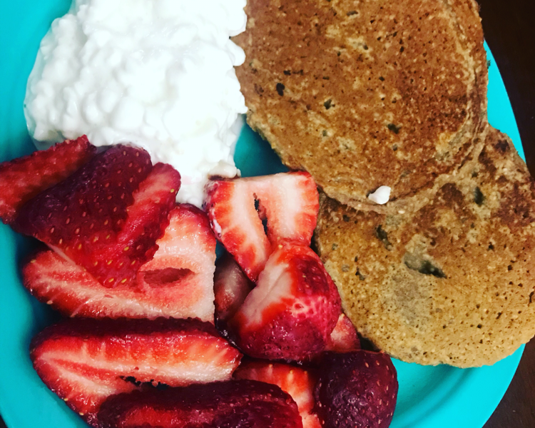
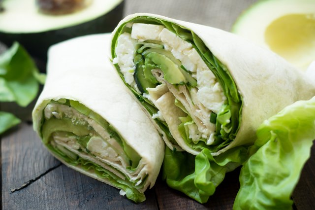
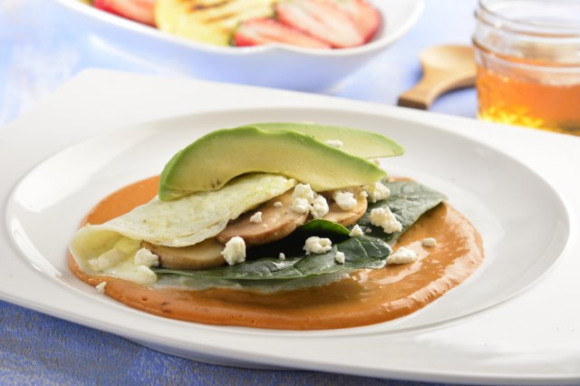

-
COPAS DE YOGURT CON GRANOLA Y FRUTAS

Estas copas de yogurt con granola y frutas son un desayuno sano y delicioso en menos de 15 minutos!...
Leer Mas -
OMELETTE DE CLARAS CON ESPINACAS

Una deliciosa receta para comenzar el día. El omelette de claras es muy ligero y saludable yse puede acompañar de espinacas u otras verduras...
Leer Mas -
HOTCAKES DE AVENA CON CHÍA
Deliciosos hotcakes saludables, hechos con avena y chia. Versión vegana y deliciosa que puedes acompañar con la miel y fruta de tu elección...
Leer Mas -
HUARACHE DE NOPAL CON QUESO PANELA

Esta receta es una deliciosa opción alternativa ya que es baja en calorías y alta en fibra, perfecta para un desayuno o cena ligera pero buenísima...
Leer Mas -
PAN FRANCÉS CLÁSICO

Una gran receta para preparar el Pan Francés, también conocido como French Toast. Se acompañan de miel de maple, mantequilla y se les puede poner fruta encima, como fresas...
Leer Mas -
QUINOA CON LECHE DE ALMENDRAS Y VAINILLA
Empieza tu día con toda la energía con este delicioso y nutritivo bowl de quinoa con leche de almendras que te dará la energía necesaria para realizar todas tus actividades...
Leer Mas -
WRAP DE CLARAS CON QUESO FETA
Delicioso wrap de claras con queso feta, esta receta es muy saludable y ligera para empezar el día, prepárala te va a encantar...
Leer Mas -
OMELETTE VEGETARIANO CON CLARAS DE HUEVO
Este omelette vegetariano con claras de huevo relleno de espinaca y aguacate frescos, acompañado con champiñones y queso de cabra va a ser el platillo perfecto para un desayuno saludable y súper completo...
Leer Mas -
SÁNDWICH DE AGUACATE, QUESO DE CABRA Y ESPINACA
Esta rica y rápida opción para preparar un sándwich, empieza tu día con toda la energía y con proteínas con la exquisita combinación de aguacate, queso de cabra y espinacas, tan crujiente como cremosito, que no perderás la oportunidad de probarlo...
Leer Mas -
BOWL DE DESAYUNO PARA LLEVAR
Esta receta de bowl de desayuno para llevar es super buena para que nunca te quedes sin desayunar y puedas llevarlo a tu oficina o para lunch de tus hijos. Puedes ponerle la variedad de verduras e ingredientes que más te gusten...
Leer Mas